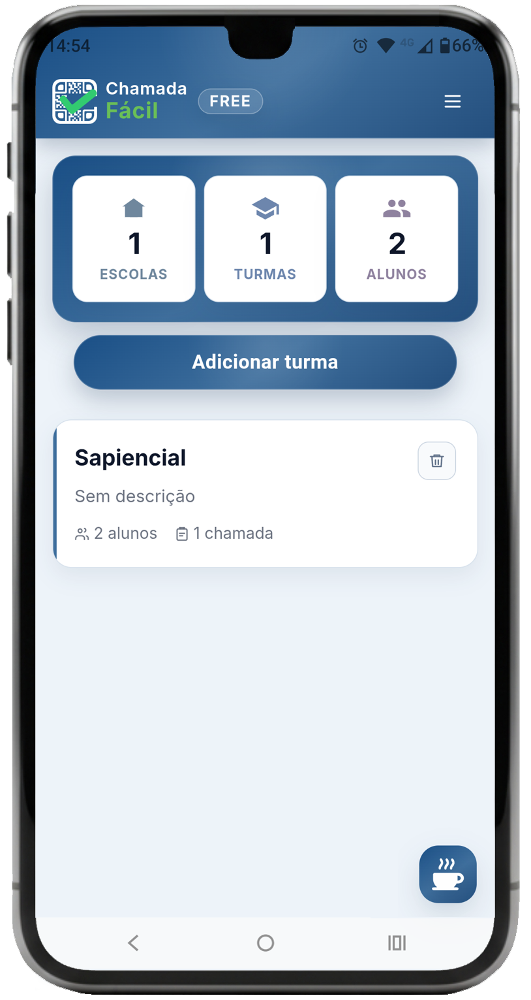

100% offline
Chamada com QR Code
Chamada escolar simples, rápida e 100% offline.
Agilize a chamada dos alunos com QR Code e registre a presença em segundos, mesmo sem internet na sala de aula. Use no Android ou direto na versão web.
